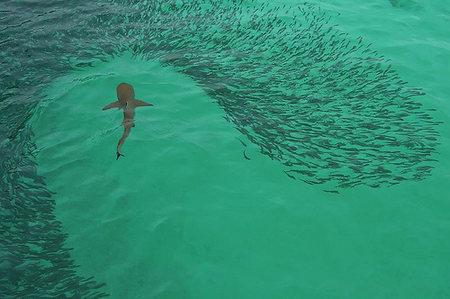
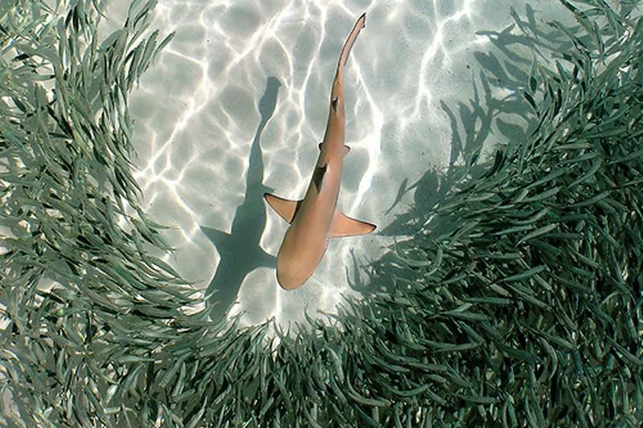

So I've rewritten my predator and prey pursuit JavaScript code. Not to confused with the predator prey population model. I've been intrigued by flocking, schooling, and herding algorithms since running across the Boids web site.
Link to the Boids page.Ben Dowling at coderholic implemented the Boids behavior model in JavaScript and you can check out his post at the following link.
Link to the JavaScript Boids page.Basically my code is based on Ben's code with a predator thrown in to pursue the prey. I was inspired by watching sharks swim through a school of fish as shown the images below. I added the avoidance behavior to the prey's Boids behavior model. The predator just has a "chase prey" behavior with a basic tendency to stay on the screen, from which the prey also inherit that same behavior.
 I migrated my original code from using the Raphaël-JavaScript Graphics Library to using KineticJS which seems to be a little more widely used HTML5 Canvas framework. The grouping behavior might need more work so that the prey don't occupy the same space. I'd also like to abstract the graphics library in the event it needs to change at some point in the future. I'd also like to visually model the shark and fish a bit more realistically.